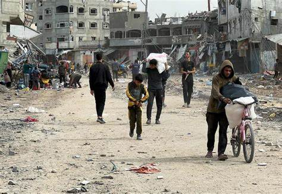
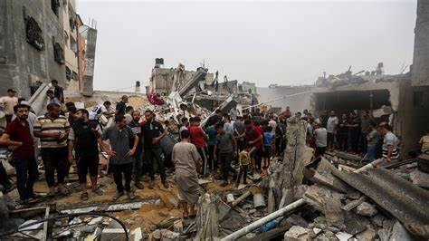
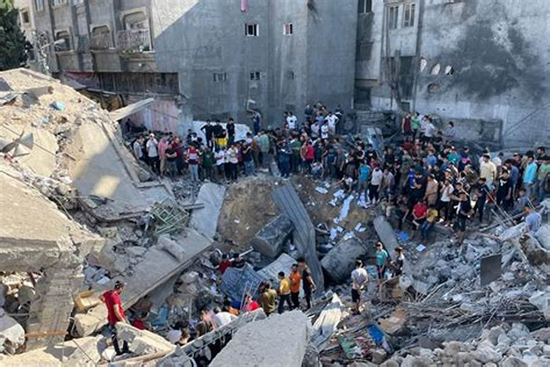

تُعتبر غزة من أكثر المناطق كثافة سكانية في العالم، وتعاني منذ سنوات من أزمة إنسانية متفاقمة بسبب الصراعات المستمرة والحصار. يعيش سكان غزة ظروفًا صعبة تؤثر على حياتهم وصحتهم وحقوقهم الأساسية.

أسباب الأزمة الإنسانية في غزة
الحصار الإسرائيلي: فرض قيود مشددة على حركة الأفراد والبضائع منذ أكثر من 15 عاماً، مما أدى إلى تدهور الاقتصاد ونقص المواد الأساسية.
الصراعات المسلحة: التصعيدات المتكررة أدت إلى دمار واسع في البنية التحتية المدنية والمرافق الصحية والتعليمية.
الضعف الاقتصادي: ارتفاع معدلات البطالة والفقر بين السكان، خاصة الشباب والنساء.
نقص الخدمات الأساسية: مثل المياه الصالحة للشرب، الكهرباء، والرعاية الصحية.

تأثير الأزمة على السكان
نقص المواد الطبية: المستشفيات تعاني من نقص حاد في الأدوية والمستلزمات.
انقطاع الكهرباء: يصل الانقطاع إلى 20 ساعة يومياً، مما يؤثر على الحياة اليومية والخدمات الحيوية.
تدهور التعليم: نقص الموارد وتهديدات أمنية تؤثر على سير الدراسة.
الأمن الغذائي: يعاني الكثير من السكان من عدم توفر الغذاء الكافي والمتوازن.

الجهود الإنسانية والدعم الدولي
المنظمات الإنسانية: تعمل على تقديم المساعدات الطبية والغذائية ودعم إعادة الإعمار.
المساعدات الطارئة: توفير المياه النظيفة، ودعم البنية التحتية، والمساعدة النفسية.
الضغط السياسي والدبلوماسي: محاولة إيجاد حلول سياسية لإنهاء الأزمة وتحسين الوضع.